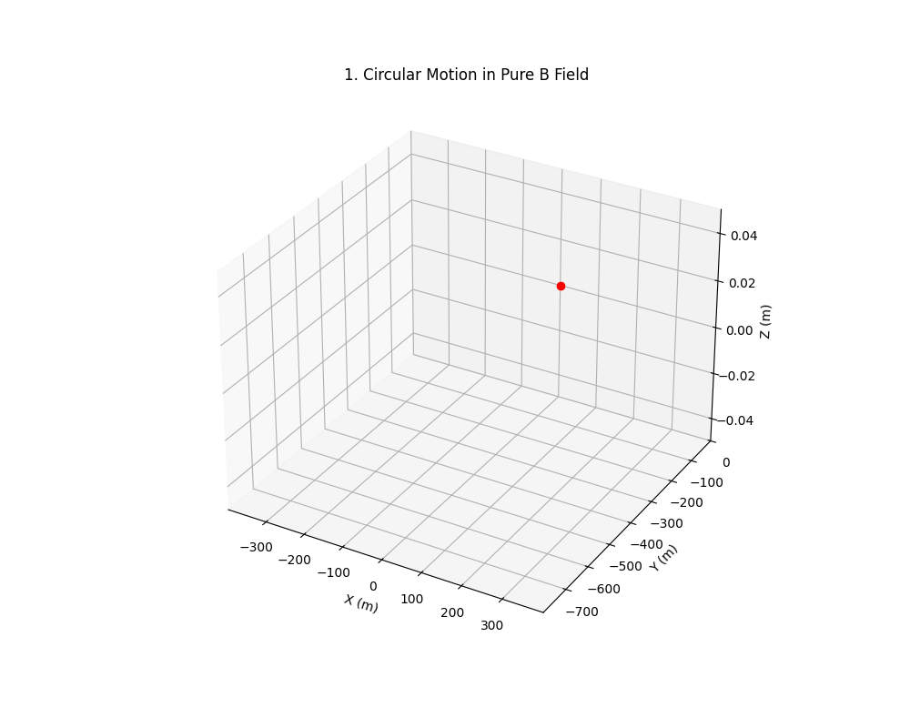
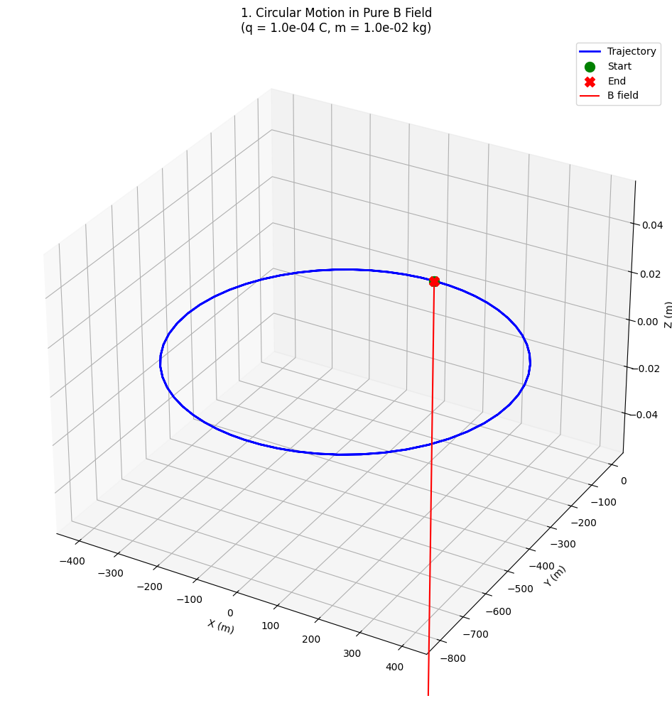
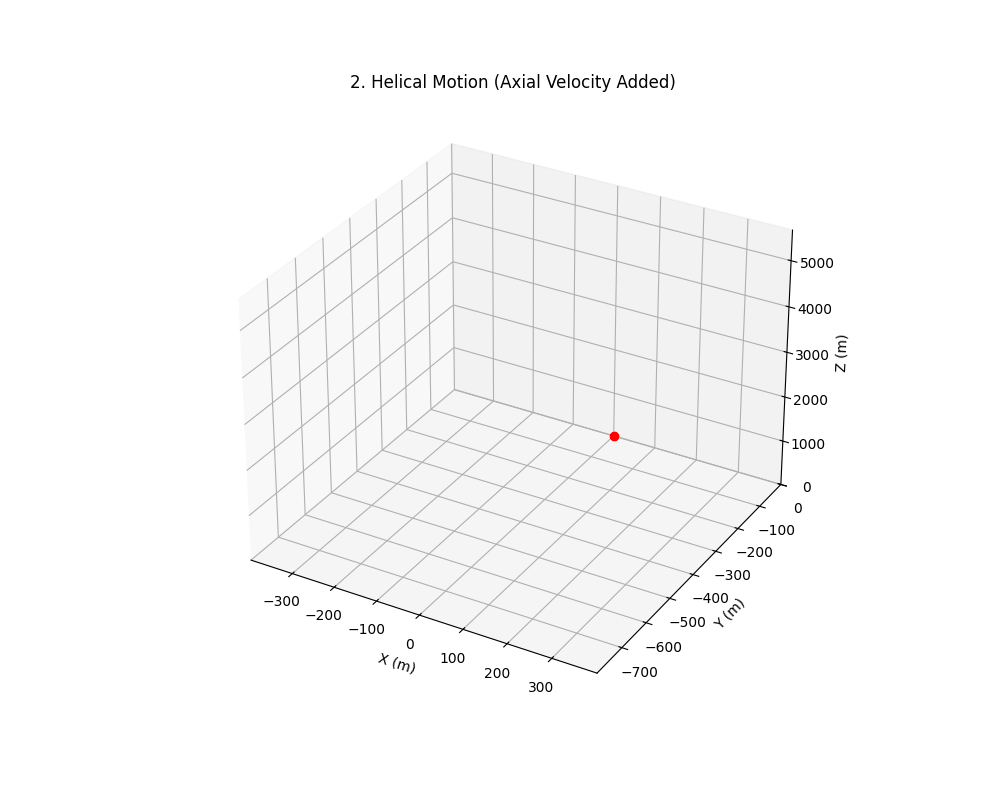
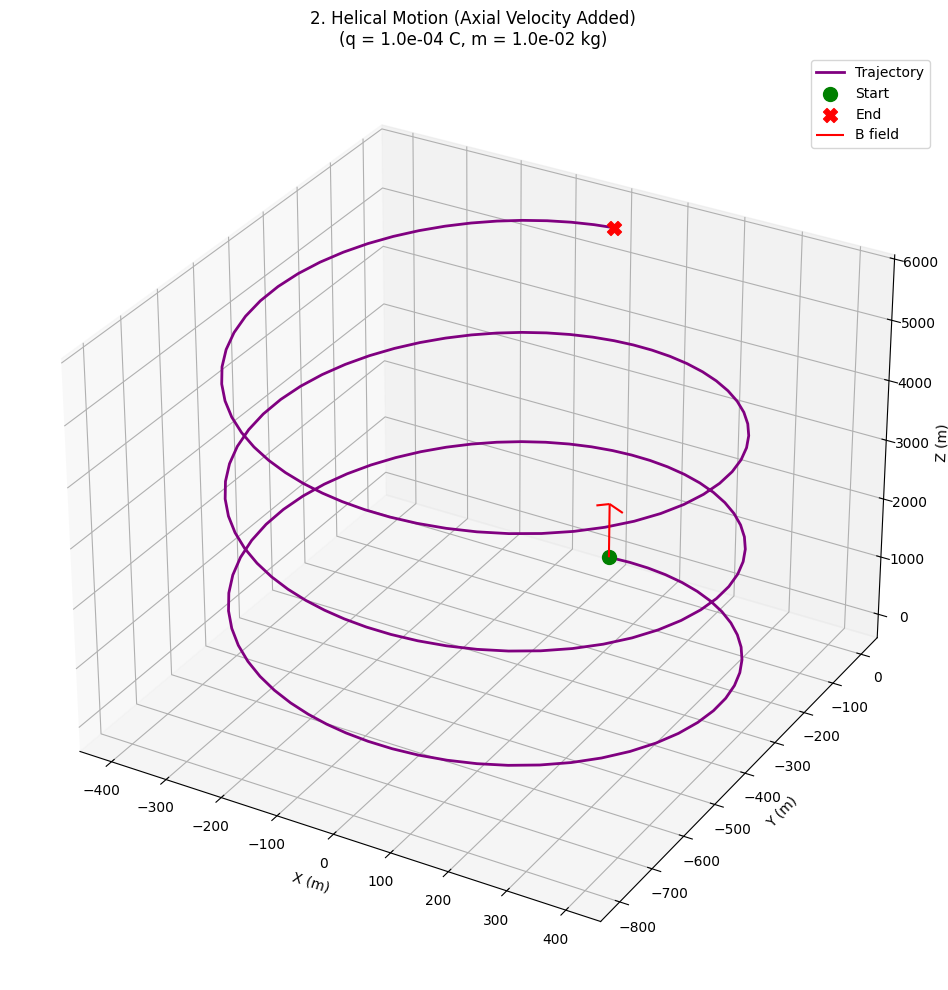
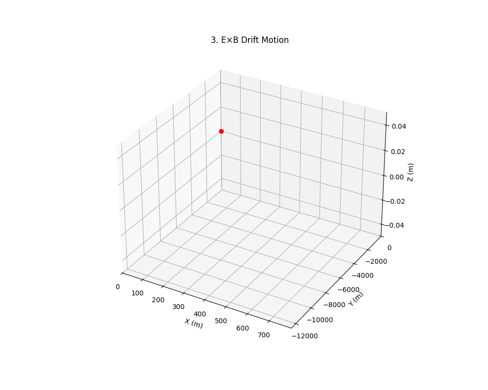
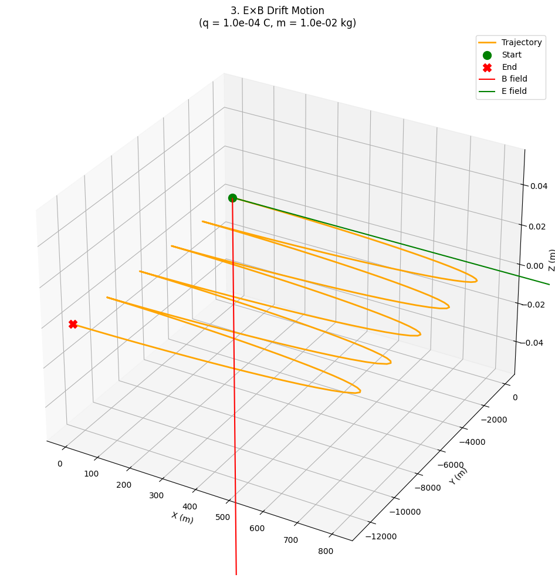

Problem 1
Lorentz Force — Simulation & Theory
Introduction
The Lorentz Force is the fundamental force experienced by a charged particle in electric and magnetic fields:
Where: - \(q\): charge (Coulombs) - \(\mathbf{E}\): electric field (V/m) - \(\mathbf{v}\): velocity vector (m/s) - \(\mathbf{B}\): magnetic field (Tesla)
Important: In this project, we simulate a macroscopic particle with
\(q = 1~\text{C}\) and \(m = 1~\text{g} = 10^{-3}~\text{kg}\)
instead of tiny electron values to ensure visible and meaningful trajectories.
Useful Concepts & Formulas
1. Magnetic Force Only (no electric field)
$$ \mathbf{F} = q\mathbf{v} \times \mathbf{B} $$ - Direction: Perpendicular to both \(\mathbf{v}\) and \(\mathbf{B}\) - Result: Circular or helical motion
2. Larmor Radius
3. Cyclotron Frequency
4. E × B Drift Velocity
Charged Particle Motion in Electromagnetic Fields
Scenario 1: Circular Motion (Pure B Field)
Physical Setup
- Fields:
- Magnetic: \(\vec{B} = (0, 0, 0.5)\) T (z-direction)
- Electric: \(\vec{E} = \vec{0}\)
- Initial Conditions:
- Position: \(\vec{r}_0 = (0, 0, 0)\) m
- Velocity: \(\vec{v}_0 = (2.0, 0, 0)\) m/s (perpendicular to B)
Theory
The particle executes circular motion with: - Cyclotron radius: \(r = \frac{mv_\perp}{qB} = \frac{0.01 \times 2.0}{10^{-4} \times 0.5} = 0.4\) m - Cyclotron period: \(T = \frac{2\pi m}{qB} \approx 1.26\) s
Key Characteristics
- Planar motion in x-y plane
- Constant speed \(v_\perp = 2.0\) m/s
- Radius matches theoretical prediction:
Scenario 2: Helical Motion (Added Axial Velocity)
Physical Setup
- Fields: Same as Scenario 1
- Initial Conditions:
- \(\vec{v}_0 = (2.0, 0, 1.5)\) m/s (added z-component)
Theory
Superposition of: 1. Circular motion in x-y plane (\(v_\perp = 2.0\) m/s) 2. Uniform motion along z-axis (\(v_\parallel = 1.5\) m/s)
Pitch distance: \(p = v_\parallel \cdot T \approx 1.5 \times 1.26 \approx 1.89\) m
Scenario 3: E×B Drift (Crossed Fields)
Physical Setup
- Fields:
- \(\vec{E} = (1.0, 0, 0)\) V/m
- \(\vec{B} = (0, 0, 0.5)\) T
- Initial Conditions: \(\vec{v}_0 = \vec{0}\)
Theory
Drift velocity given by:
Theory
The E × B drift velocity is given by:
Thus,
Expected trajectory: 1. Initial acceleration in x-direction 2. Curved transition phase 3. Steady drift in y-direction
Comparative Analysis
| Scenario | Field Configuration | Motion Type | Characteristic Velocity |
|---|---|---|---|
| Circular | Pure B | Planar | \(v_\perp\) only |
| Helical | Pure B | 3D spiral | \(v_\perp + v_\parallel\) |
| E×B Drift | Crossed E and B | Curved drift | \(v_E = E/B\) |
Scenario 1: Circular Motion (Pure B Field)
|  |  |
|---|---|
Scenario 2: Helical Motion (Added Axial Velocity)
|  |  |
|---|---|
Scenario 3: E×B Drift (Crossed Fields)
|  |  |
|---|---|
Visualizations for each are in the Google Colab.